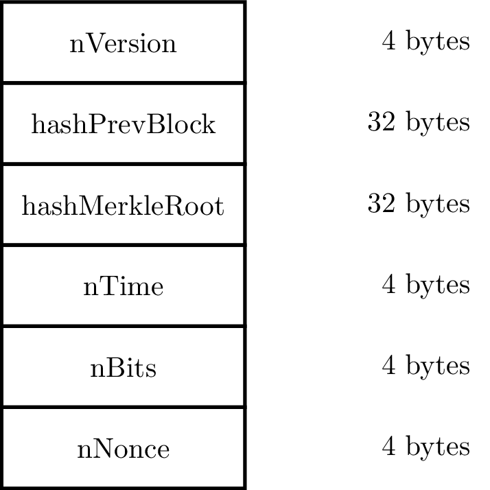
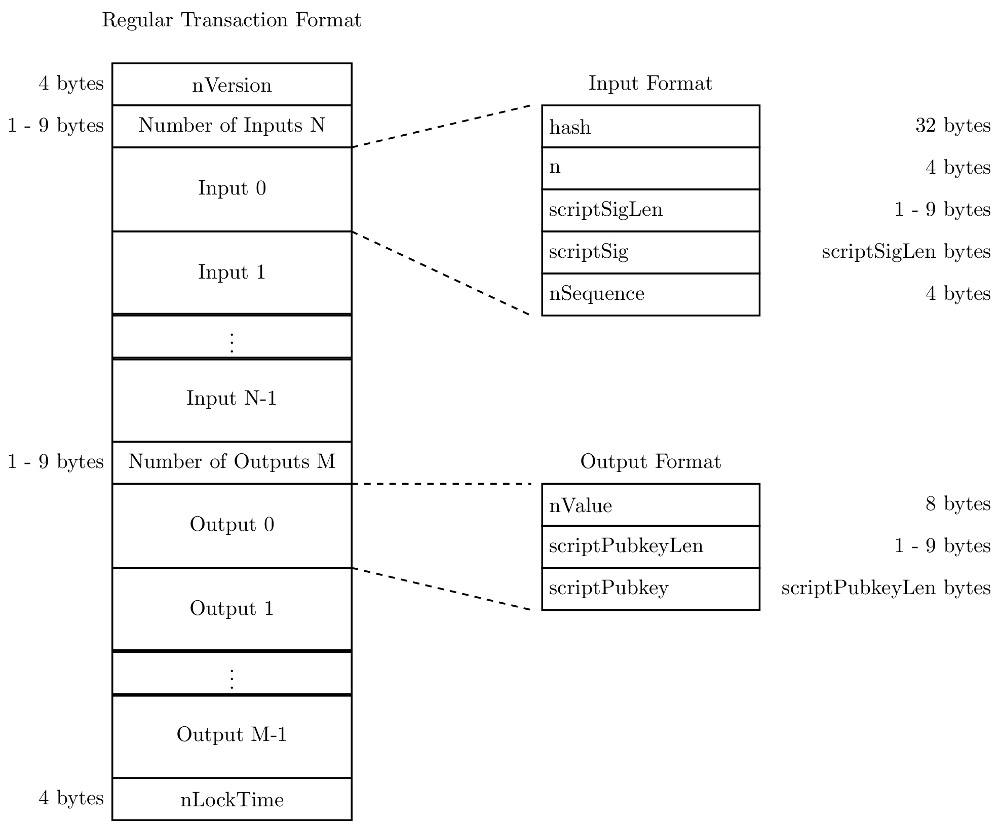
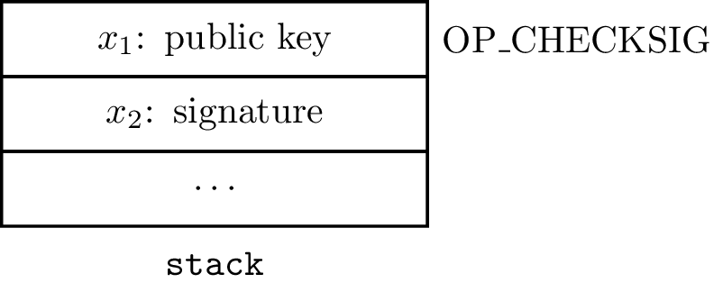

Chapter 4: The Blockchain
The blockchain is the database containing a record of all Bitcoin transactions since Bitcoin came into existence in 2009.
区块链自2009年比特币诞生以来，是一个记录所有比特币交易的数据库。
The blockchain consists of a linear list of blocks where each block is composed of a block header followed by a list of Bitcoin transactions.
区块链包含一个存储所有区块的线性列表，每个区块包括一个区块头，后面跟着比特币交易列表。
This is illustrated in Figure 4.1.
如图 4.1 所示。

A Bitcoin transaction involves the transfer of bitcoins between entities.
一个比特币交易包括了实体之间比特币的转移。
We will specify the format of a transaction in the next chapter.
我们将在下一章指定一个交易的形式。
For now, a transaction can be thought of as an encoding of the details of a transfer of bitcoins from source Bitcoin addresses to destination Bitcoin addresses.
而目前一个交易可以被想成是一个从比特币源地址到比特币目的地址转移细节的编码。
The first block in the blockchain(the genesis block) was created in January 2009.
比特币的第一个区块（创世块）于 2019 年 1 月被创建。
As for July 2017, the blockchain had more than 478,000 blocks and occupied approximately 125 gigabytes of disk space.
而到了2017年7月，区块链已有超过 478000 个区块并且占据了大概 125G 的硬盘空间。
Until August 2017, the maximum size of a block was 1 megabyte (1,000,000 bytes).
In August 2017, a new feature called Segregated Witness(SegWit) was activated in the Bitcoin network which effectively increased the maximum block size to 4 megabytes.
在2017年8月，一个叫做隔离证明（SegWit）的新特性在比特币网络中被激活，有效地将最大块规模扩大到 4MB。
The motivation for and design of SegWit will be discussed in the next chapter as it requires us to first understand some shortcomings in the pre-SegWit Bitcoin system.
隔离证明的启发和设计将在下一章讨论因为这会使我们首次认识到前-隔离证明的区块链系统的一些缺陷。
In this chapter, we will describe the blockchain and explain the motivation behind different aspects of its design.
在这一章中，我们将描述区块链并解释各部分设计的动机。
4.1 Rewarding Blockchain Updation
The task of storing and updating the blockchain is performed collectively by the nodes in the Bitcoin P2P network.
储存和更新区块链的任务在比特币P2P网络中被结点共同执行。
Nodes called full nodes store a copy of the blockchain on their hard disks.
被成为全结点的结点在他们的硬盘上存储一份区块链的副本。
When a full node connects to the Bitcoin network for the first time, it downloads a copy of the blockchain from the existing full nodes.
当一个全结点首次连入区块链网络时，会从已经存在的全结点下载一份区块链的副本。
The task of adding blocks to the blockchain is called mining and is done by full nodes called miners.
将区块加入到区块链的任务由全结点完成，这个过程称为挖矿，这些全结点称为矿工。
The naming convention for mining/miners was chosen because the mining task involves the solution to a difficult computational problem and a miner which successfully solves such a problem is rewarded with newly created bitcoins.
选择使用挖矿、矿工这样的命名约定是因为这个过程涉及解决困难的计算问题以及成功求解出这样一个问题的全结点会被奖励新产生的比特币。
This reward is called the block subsidy and is currently equal to 12.5 bitcoins per block.
这个奖励被称为区块补贴，目前为每个区块12.5个比特币。
We will discuss the details of the computational problem used in Bitcoin mining in Section 4.3 after we describe the block header structure.
4.3 Mining
A miner node forms a candidate block by collecting some transactions from its mempool.
一个旷工结点（可以是一台主机、或一个进程）从内存池中收集一些交易用于生成一个候选区块（还不是区块链上的新区块）。
The height of a block in the blockchain is the number of blocks preceding it.
The genesis block has height 0, the immediate successor of the genesis block has height 1 and so on.
创世块的高度为0，紧接着的区块高度为1，以此类推。
Suppose a miner node is attempting to add a candidate block at height $N$.
假设一个旷工结点尝试在高度N上添加一个候选结点。
The newest block in the node’s copy of the blockchain has height $N-1$.
区块链副本上的的最新区块高度为 N-1.
The hashPrevBlock field of the candidate block header is populated with the block hash of the block at height N-1.
候选块的 hashPrevBlock 字段由高度N-1的区块计算而来。
The hashMerkleRoot field is populated with the Merkle root of the transactions in the candidate block.hashMerkleRoot 字段由候选块中交易生成的 Merkle 数计算而来。
The nVersion field contains the current block version number.
The nTime field is populated with a timestamp in Unix time format to record the time of candidate block creation.nTime 字段在 Unix 时间格式下记录候选块的生成时间戳。
The Unix time is the number of seconds which have elapsed since 12:00 AM Coordinated Universal Time on January 1st, 1970 with deductions to account for leap seconds.
Unix时间指的是从标准国际时间1970年1月1日 12:00 AM 到当前时间所经历的秒数。
Each node in the network has a local clock which is not necessarily synchronized with the local clocks of the other nodes.
网络中的每个结点都有一个本地时钟，不必要和其他结点的本地时钟进行时间同步。
So there is no globally unique notion of time in the network.
所以在网络中没有统一的时间。
The Bitcoin system does not specify an explicit algorithm for calculating the nTime field in a candidate block.
比特币系统没有指明在一个候选区块中计算 nTime 字段的直接算法，
However, it imposes two constraints to ensure that the timestamp in the nTime field is approximately correct:
但是却两种引入了两种约束来保证nTime中的时间戳的大致正确性：
- In a candidate block at height N, the
nTimefield is required to be strictly greater than the median of thenTimevalues in the 11 blocks in the blockchain at heights N-1, N-2, …, N-11.
在一个高度为 N 的候选区块中，要求nTime字段应严格大于高度为N-1, N-2, …, N-11区块的所有nTime值的中位数。
Note that this constraint causes the median-time-past values to increase monotonically with block height, even if thenTimefields do not. 注意到此项约束使得随着区块高度的增长，中位数时间单调递增。 - When a network node receives a candidate block created by a miner, it rejects it if the
nTimefield specifies a time which exceeds the node’s network-adjusted time by more than two hours.
当一个网络结点接收一个旷工结点建立的候选区块时，如果nTime字段指定了一个超过结点的网络协调时间2小时，则会拒绝此候选区块。
The network-adjusted time at a node is the median of the local clocks of the other nodes it is connected to.
一个结点的网络协调时间是指与该结点相连的其他结点的本地时间数值的中位数。
A miner node is free set to the nTime field to any value which satisfies these constraints.
在满足约束条件下，一个旷工结点可以自由设置nTime字段值。
The first constraint specifies a lower bound on nTime which can be calculated from the current blocks in the blockchain.
Assuming that the output of the SHA-256 function behaves like a random 256-bit string where each bit is equally like to be 0 or 1 independently of the other bits, the probability that the block hash falls below the target threshold T for a trial nNonce value is
假设将SHA-256函数的输出看做一个256位的随机串，其中每个比特之间取0还是取1是相互独立的，区块杂凑值等于或低于阈值T的概率是
Modelling each try by the miner as a Bernoulli random process with success probability p, the average number of trials required to find a block hash below the threshold 1/p.
4.4 Bitcoin Transactions
While a single output in the coinbase transaction is sufficient for a miner to gain control of the block reward, multiple outputs give the miner flexibility to distribute the block reward to multiple addresses.
尽管coinbase交易中单一输出就足够满足一个旷工对区块回报的控制，多个输出给了旷工将区块回报分配到多个地址的灵活性。
The amounts in the regular transaction outputs can take any value as long as the sum of the amounts does not exceed the total amount of bitcoins unlocked by the inputs.
常规交易输出段中的数额可以取任意值，只要满足数额之和不超过被输入端被解锁数额之和。
How is the value of the transaction
4.5 Bitcoin Ownership
When an output of a previous transaction is unlocked by the input of a later transaction, all the bitcoins in the output need to be spent.
当一个交易输出被后一个交易的输入解锁，里面的所有比特币需要被花费。
This implies that a transaction output can be in only one of two states: spent or unspent.
这意味这一笔交易输出只可能是两种状态：花费或未花费。
Chapter 5 Bitcoin Transactions
In this section, we give a high-level description of Bitcoin transactions in order to discuss the security properties of the blockchain.
在这一部分中，我们为了讨论比特币的安全性质，给出比特币交易的顶层描述。
A more detailed description of the transaction format will be given in Chapter 5.
A Bitcoin transaction encodes a transfer of bitcoins between entities.
一个比特币交易对实体之间比特币的交易进行编码。
A destination of the transfer in a transaction is called an output.
每笔交易的去向被称为输出。
A single transaction can have several outputs.
单笔交易可以有多个输出。
Each output in a transaction can server as a source of bitcoins in a later transaction.
交易的每个输出可以作为后续交易的比特币的源头。
When previous transaction outputs are specified as sources of bitcoins in a transaction, they are called input.
这些用于作为比特币交易的源头的前面的输出段被称为输入。
A coinbase transaction has no input and at least one output.
一个 coinbase 交易没有输入但至少有一个输出。
There is no input because the source of bitcoins is not a previous transaction output but the block reward, i.e., the sum of the block subsidy and the transaction fees from the transactions in the block.
没有输入的原因是这些比特币的源头不是一个先前交易的输出而是一个奖励块，即区块的援助款之和加上块中的交易花费。
Each output in the coinbase transaction specifies two items:
每个 coinbase 交易的输出需要指定两项：
- The amount of bitcoins from the block reward which are associated with this output. 块中与此次输出相关的奖励比特币的数量
- A script which specifies the conditions under which the bitcoins associated with this output can be spent. 指定了与当前输出相关联的、比特币可被花费的条件的脚本
The script in an output can be thought of as a challenge.
在输出段中的脚本可以被看做是一个挑战。
An entity which provides a satisfactory response can transfer the bitcoins associated with the output.
能提供正确回应的实体可以转移与输出段相关联的比特币。
Figure 4.9 illustrates a bitcoin transaction with two outputs.
图 4.9 展现的是一个拥有两个输出的比特币交易。
The first output specifies an amount of $x_1$ and a challenge script $C_1$.
第一个输出指明了数额 $x_1$ 和挑战脚本 $C_1$。
A satisfactory response to $C_1$ is needed to spend the $x_1$ bitcoins.
花费掉 $x_1$ 比特币需要一个对 $C_1$ 的正确回应。
Similarly, a satisfactory response to the challenge script $C_2$ is needed to spend the $x_2$ bitcoins in the second output.
Pre-SegWit Regular Transactions
The format of a pre-SegWit regular transaction is shown in Figure 5.2.

The field names in teletype font (like nVersion) are from the Bitcoin Core reference client.
以电文字体表示的字段名（比如 nVersion）从比特币核心参考客户端中获取。
5.5 Pre-SegWit Standard Scripts
When a new regular transaction is broadcast on the network for inclusion in the blockchain, each node which hears the transaction validates it by evaluating the challenge and response scripts.
当一个新的常规交易在网络上广播以囊括到区块链中，收到交易的每个结点通过执行锁定和解锁脚本进行验证。
Valid transactions are then relayed by the node to its neighboring nodes, which in turn will perform their own validation.
接着这些有效交易扩散到相邻结点，相邻结点进而也将执行锁定和解锁脚本。
If no restrictions are placed on the challenge and response scripts, a malicous node can construct scripts which consume excessive amounts of CPU time or RAM at each network node during script validation.
如果不对锁定和解锁脚本进行限定，一个恶意结点可以构造出在脚本验证期间消费每个网络结点过量CPU时间和内存的脚本。
This constitutes a denial-of-service (DoS) attack on the network as regular transactions broadcasted by non-malicious nodes will experience delays before they are recorded on the blockchain.
这会在网络上形成一次拒绝服务攻击（denial-of-service, DoS），导致当常规交易被非恶意结点广播而记录进区块链之前的时候会遭遇时延。
To avoid such DoS attacks, network nodes will not relay transactions containing scripts which do not belong a limited set of standard scripts.
Prior to SegWit activation, the set of standard challenge scripts consisted of the five script templates: Pay to Public Key(P2PK), Pay to Public Key Hash(P2PKH), m-of-n Multi-signature
在启用SegWit之前，标准挑战脚本集合包含有5个脚本模板：向公钥付款（P2PK），向公钥哈希付款（P2PKH），和m-of-n多重签名。
Pay To Public Key(P2PK)
The P2PK challenge script template has a scriptPubkey field which consists of a data push of a public key followed by the OP_CHECKSIG operator.
P2PK 锁定脚本模板有一个 scriptPubkey 字段，该字段包括一个公钥数据的入栈，后面紧跟着 OP_CHECKSIG 操作符。
The public key can be in either compressed (33 bytes) or uncompressed (65 bytes) format.
公钥可以以压缩形式（33 字节）或非压缩形式存储（65 字节）。
For compressed public keys, the scriptPubkey is of the form
对于压缩的公钥，scriptPubkey 有如下形式1
0x21 <Compressed Public Key> OP_CHECKSIG
其中，0x21 操作符往栈中压入包含之后33字节的字节数组。对于非压缩形式的公钥，scriptPubkey 有如下形式1
0x41 <Uncompressed Public Key> OP_CHECKSIG
其中，操作符0x41将其后65个字节作为一个字节数组压入栈中。
Usually, the sizes of data push operations are omitted from script descriptions.
With such an omission, the P2PK challenge script template is given by1
<Public Key> OP_CHECKSIG
Let $x_1$ and $x_2$ be the top two elements in the stack when the OP_CHECKSIG operator is executed.OP_CHECKSIG uses the ECDSA signature verification procedure from Section 2.5 to check that $x_2$ is a valid signature when $x_1$ is used as the public key.

m-of-n Multi-Signature (Multisig)
A m-of-n multisig challenge script specifies n public keys and requires a valid response script to provide m ECDSA signatures created using any m out of the n private keys corresponding to these public keys.
一个 m-of-n 多签名锁定脚本指定了 n 个公钥并且要求一个有效的解锁脚本能提供 m 个 ECDSA 签名使用从 n 个私钥中根据公钥任取 m 个。
Transaction Version
Input Format
Each input in a pre-SegWit regular transaction has the same five fields.
Firgure 5.2 shows these fields for the first input.
The fields in the other inputs are not shown for brevity.
为了简洁表示，其他输入段的字段没有显示出来。
The input fields have the following semantics.
输入字段有如下语义。
- The
hashfield contains the 256-bit transaction identifier(TXID) of a previous transaction containing the output which will be unlocked by this input. 256比特交易标识（TXID）的hash字段包含将被此次输入解锁的前一笔交易的输出。 The field is calledhashbecause the TXID is the double SHA-256 hash of the previous transaction. 称此字段为hash是因为此 TXID 是前一笔交易的双SHA-256杂凑值。 - The 4-byte n field contains the index of the output being unlocked in the previous transaction.
Contracts
In spite of its limited functionality, the Bitcoin scripting language can be used to create contracts which encode conditional exchange of bitcoins among entities.
除了限定好的功能外，比特币脚本语言可以用来创建在一些条件下的实体之间交易比特币的合约编码。
The entities participating in a contract typically signal their intent by signing a transaction or by providing a valid response script to unlock a UTXO.
参与合约的实体通常通过给交易签名或者提供一个UTXO的有效解锁脚本来完成转账目的。
Some contracts have safeguards protecting honest entities against malicious or uncooperative behaviour other participants.
一些合约具有保护诚实实体抵御其他成员恶意或不合作行为的安全保障。
These safaguards either enable complete recovery of the bitcoins invested by the honest entities while entering the contract.
当进入合约时，这些安全保障也能够完全恢复由诚实实体投资的比特币。
While there are several contracts possible, we discuss three examples:
我们从若干个合约选出三个例子来说明：escrow, 微支付, 和去中心化
Escrow
Consider the scenario where Alice(the buyer) wants to purchase a used book from Bob(the seller) using bitcoins.
假设Alice（买家）想使用比特币从 Bob（卖家）那里买一本旧书。
Alice and Bob live in different cities making it infeasible for them to meet and perform the transaction.
Alice 和 Bob 住在不同的城市，这使得他们见面执行交易变得不可行。
Bob promises to ship the book to Alice once he receives the bitcoin payment.
Bob 承诺一旦他收到比特币付款便把书交付给 Alice。
But Alice does not trust Bob and fears that he may not send her the book after receiving the payment.
但是Alice不信任Bob并且害怕他在收到付款后不会把书给她。
To reduce her risk, Alice proposes to use an escrow contract to pay Bob.
为了降低风险，Alice建议使用escrow合约交付给Bob。
The contract needs a third party Carol(the escrow) who both Alice and Bob trust.
合约需要一个Alice和Bob都信任的第三方Carol（escrow）。
The contract proceeds as follows:
合约执行如下：
- Alice requests public keys from Bob and Carol. Let these keys be
PubKeyBandPubKeyCrespectively.
Alice向Bob和Carol索取公钥，分别用PubKeyB和PubKeyC表示。 - Alice transfers $x$ bitcoins to a 2-to-3 multisig output which has the challenge script
Alice 转$x$比特币给一个2-to-3 多签名输出，多签名输出带有锁定脚本：1
OP_2 <PubKeyA> <PubKeyB> <PubKeyC> OP_3 OP_CHECKMULTISIG
其中 PubKeyA 是 Alice 的公钥。
- Once Bob sees that Alice’s transaction has appeared on the blockchain, he ships the book to Alice.
一旦Bob看到Alice的交易出现在区块链上，他便寄书给Alice。 - The funds locked in the multisig output can be spent if any two of Alice, Bob, and Carol provide signatures created by their respective private keys.
在多签名输出中锁定的基金可以被Alice，Bob和Carol三个人之中的任意两个提供的私钥。
Any of the three following scenarios can happen.
下面的场景都有可能发生。
(i) Alice is happy with the book she has received.
Alice很满意她收到的书。
She signs a transaction which unlocks the 2-of-3 multisig output and transfers the $x$ bitcoins(minus the transaction fees) to the P2PK address containing Bob’s public key.
她签名交易以解锁2-to-3多签名输出（此时只有1个签名尚不能解锁），然后转账 $x$ 比特币（减去交易税）到Bob的公钥付款地址。
She sends this transaction to Bob who adds his own signature and broadcasts it on the network for inclusion on the blockchain.
她将这笔交易发给Bob，Bob对这笔交易签名（2个签名可以完成解锁了）并且广播到网络以被收纳进区块链。
(ii) Alice receives the book but refuses to sign the transaction paying Bob.
Alice收到了书但是拒绝签名付款给Bob。
Bob provides proof of shipment to the escrow Carol and requests her to sign a transaction paying him.
Bob提供邮寄证据给可信第三方Carol
(iii) Bob does not ship the book to Alice. Furthermore, he refuses to sign the transaction refunding the bitcoin to Alice.
Bob 没有寄书给 Alice。进一步地，他没有签署退款给 Alice 的交易。
The above escrow contract fails if the escrow Carol colludes with Alice or Bob.
如果第三方Carol与Alice或者Bob勾结，则以上的可信第三方合约将失效。
If Alice and Carol collude, then they can refuse to pay Bob even if he sent the book to Alice.
If Bob and Carol collude, then they can transfer the bitcoins to any address without sending the book to Alice.
Another weakness of the contrast is that it is difficult for Bob to give proof of shipment.
He can send the tracking information of the package to Carol but the package ifself may be empty.
他可以发送包裹物流信息给Carol但是包裹本身可能是空包裹。
6.2 Micropayments
Even Bitcoin transaction involves paying transaction fees which makes using Bitcoin to make small payments expensive (the transaction fees may exceed the payment amount).
尽管比特币交易包含支付交易税，这使得使用比特币进行小额付款变得很昂贵（交易税可能超过付款值），
But if a sequence of small payments are to be made to the same entity, the micropayment contract can be used which aggregates the small payments and requires that transaction fees be paid for only one transation.
但是如果一系列的小额付款给同一实体，可以使用微付款合约来汇集小额付款和要求交易税只付给一个交易。
Consider the scenario where Alice offers proofreading and editing services online in return for bitcoins.
考虑以下应用场景，Alice提供在线校对和编辑服务以换取比特币。
Clients can email Alice their documents and Alice will reply with typos and grammatical errors she has found in the documents.
客户可以通过邮件给Alice发送他们的文档然后Alice将返回她在文档中找到的打印和语法错误。